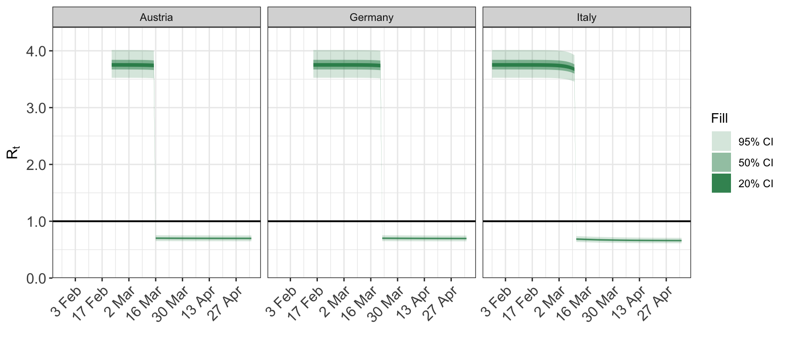
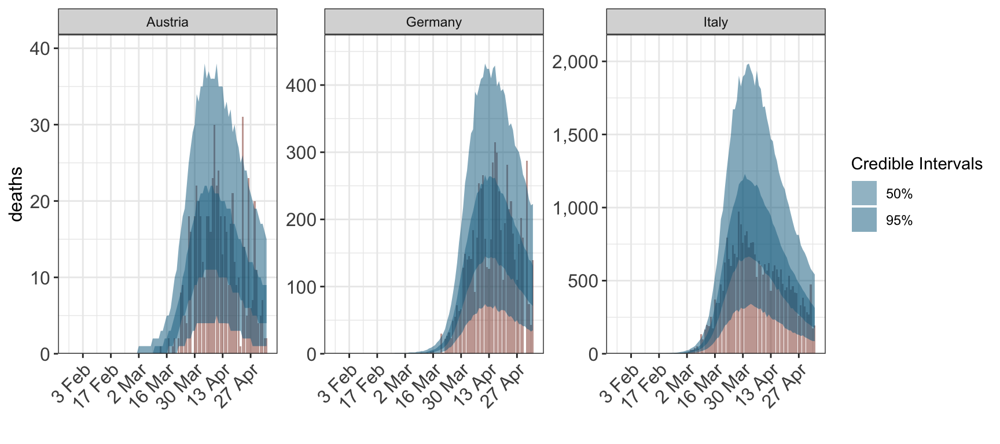
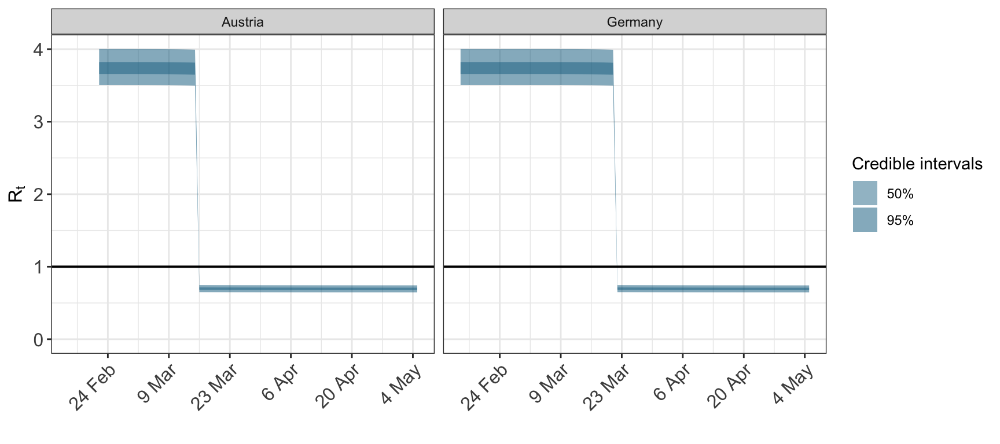
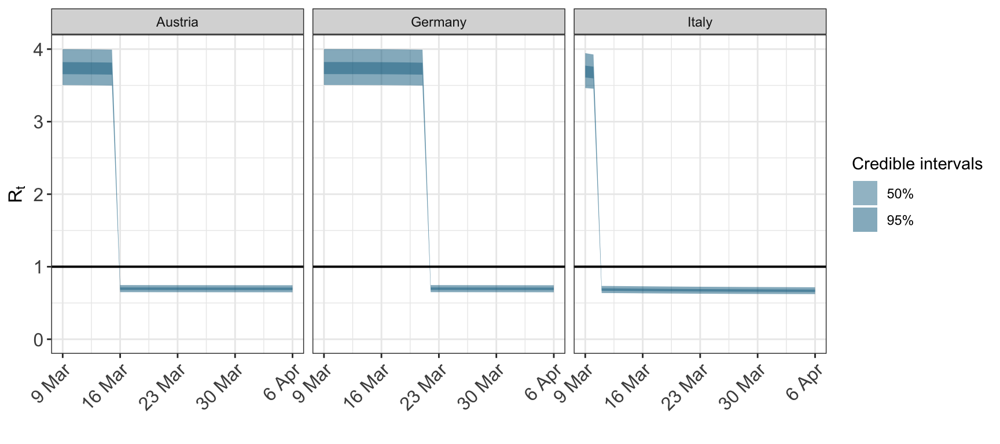
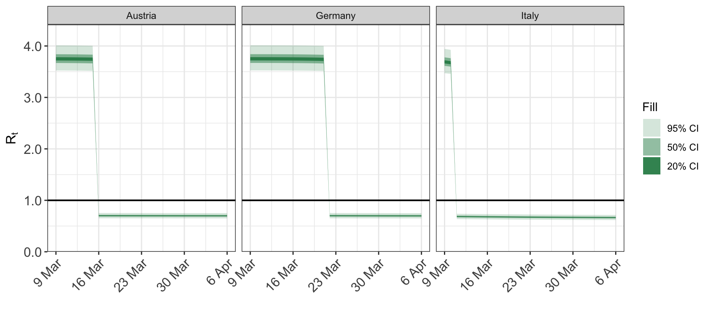
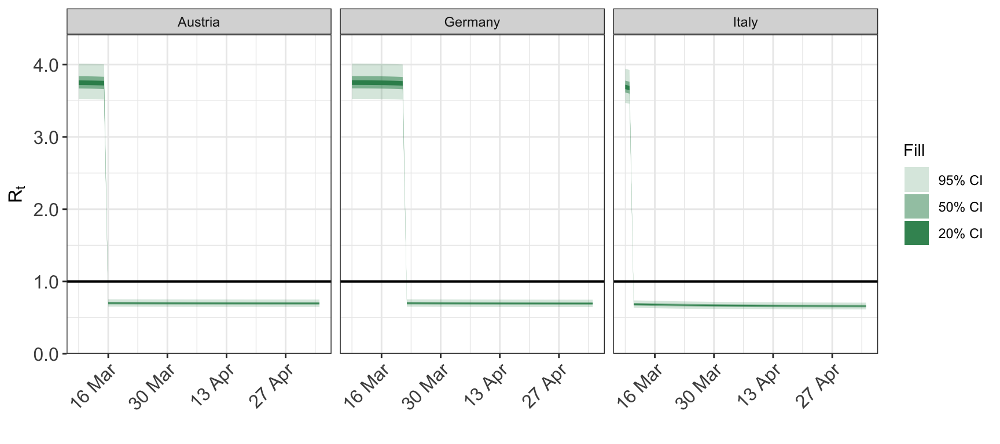
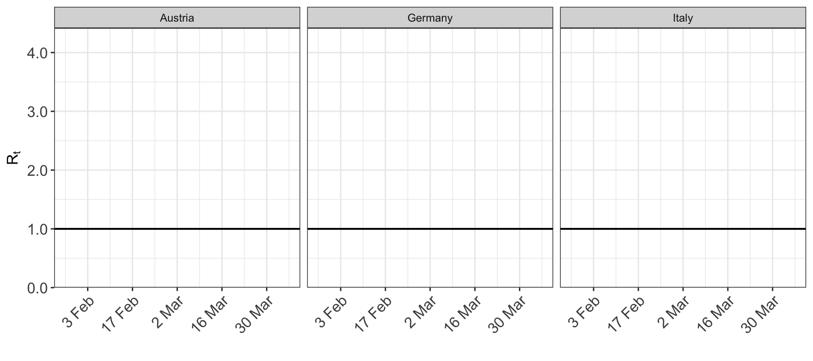
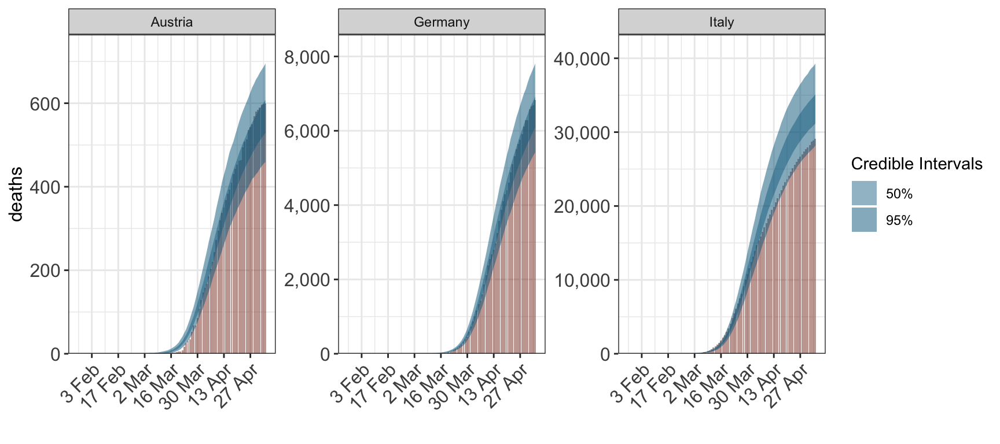
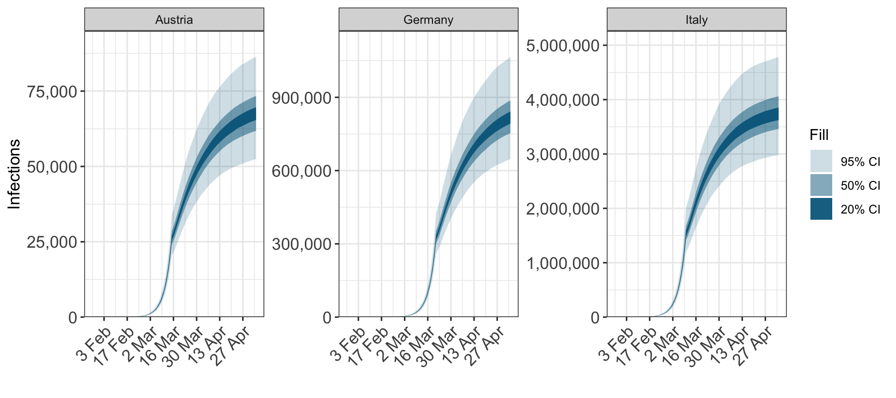
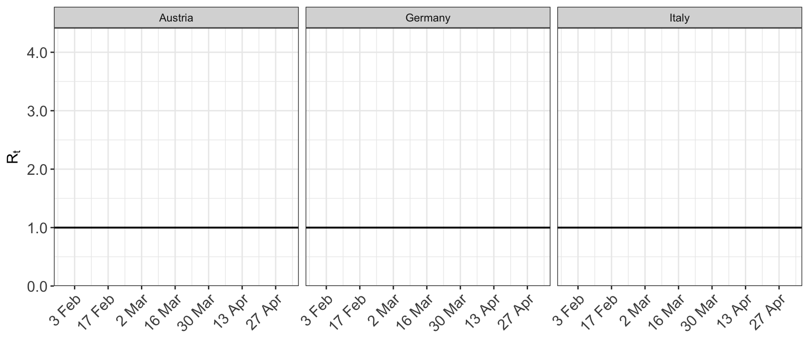

This vignette demonstrates some of the plotting utilities available in epidemia.
epidemia provides three plotting functions:
1. plot_rt: for plotting the reproduction number
2. plot_obs: for plotting the predictve posterior for a single type of observation (for example, daily cases or daily deaths).
3. plot_infections: for plotting the number of infections.
The first argument of all three functions is an epimodel object returned by calling epim
We start by fitting a model, the results of which we are going to plot. The model is fitted for three countries: Italy, Austria and Germany.
library(epidemia) data("EuropeCovid") options(mc.cores = parallel::detectCores()) # collect arguments for 'epim' args <- EuropeCovid args$algorithm <- "sampling" args$sampling_args <- list(iter=1e3,control=list(adapt_delta=0.95,max_treedepth=15),seed=12345) args$group_subset <- c("Italy", "Austria", "Germany") args$rt <- epirt( formula = R(country, date) ~ 1 + lockdown, prior = rstanarm::normal(location=0, scale=.5), prior_intercept = rstanarm::normal(location=0, scale=2) ) fit <- do.call("epim", args)
Calling plot_rt with no arguments other than the fitted epimodel plots the repdoduction for every group for the entire date range for which the model was fitted.
plot_rt(fit)

To plot observations, the name of the observation type must also be specified using the type argument.
plot_obs(fit, type="deaths")

Use the groups argument to plot a subset of the available group. For example, we can plot the repduction number for just Austria and Germany.
## Warning: smooth=1 is too large
## (one group has 0 unique dates)
## - no smoothing will be performed
We can also subset the date range plotted. For example, we may want to focus on the dates where interventions occur. This is done using the dates argument, which is passed a length-2 vector with c(start_date, end_date). Both elements of dates must be coercible to Date - if the coercion fails for any reason then the whole date range is plotted.
Other important arguments related to the dates are:
date_breaks: the frequency of the tick labels on the date axis. Default is “2 weeks”. This argument is passed to the date_breaks argument of ggplot2::scale_x_date. See its documentation for allowed values.date_format: passed as the the format argument to as.Date when coercing dates to class Date. Default is “%Y-%m-%d”. This date format should match the date format in the data used to fit the model.
The same plot with a different date format:

To restrict the dates from one direction only, set the appropriate element of dates to NA.


For obsersevations and infections set cumulative=TRUE to plot the cumulative quantitity.
plot_obs(fit, type="deaths", cumulative=TRUE)

plot_infections(fit, cumulative=TRUE)

The reproduction number can be smoothed by taking the mean value over a rolling window. The size of this window is controlled using the smooth argument to plot_rt. It is an integer giving the size of the window in days. The default value of 1 corresponds to no smoothing.
The smoothing is applied separately to each posterior draw.
plot_rt(fit, smooth=7)
